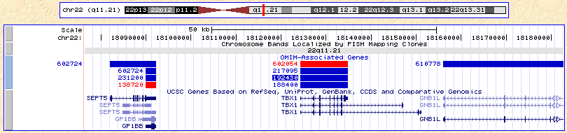
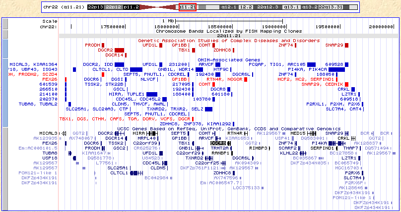
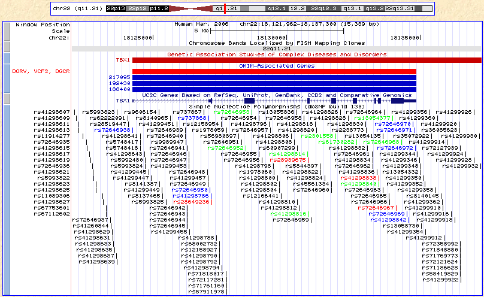
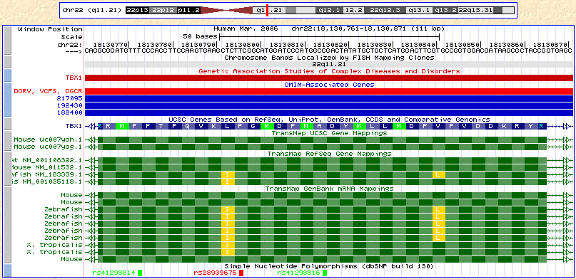

|
This session will focus on navigation and how to use the Genome Browser
to get information about genes.
- Open a Genome Browser in a separate window by visiting
genome.ucsc.edu.
If you are using a windows-based computer, you can toggle back and forth between this
page the browser window page using Alt-Tab.
On a Mac: use Command (apple)-backtick (cmd-`).
- Click the Genome Browser link in either the top bar or the left bar.
- In case you have used the browser before, let's all start at the same place.
Click: Click here to reset the browser user interface settings to
their defaults.
- Use the assembly pulldown to select the Mar 2006 human assembly (hg18).
- Hit the [Submit] button to go to the hg18 browser.
- Here is a Clinical Report
from a microarray test on a patient, which we will use in this exercise.
We will investigate this report to see what we can learn about the
microdeletion region.
- Back at the Browser window, turn off all tracks using the
hide all button.
- Beneath the now blank image, find the UCSC Genes track in the Gene and Gene
Prediction track group. Use the pull-down to set this track
to pack. Hit any of the refresh buttons.
- Type or copy/paste 22q11.21 into the position/search box.
Hit the jump button.
The image will redraw at that chromosome
band: 4.2 Mb. The Chromosome Band track will automatically open.
- Type or copy/paste chr22:17086001-19835417 into the
position/search box. Hit the jump button.
The image will open to that location (2.75 Mb).
- Type or copy/paste 192430 into the Position box. The Genome
Browser returns a search results page with all items matching that
number. Choose the first item in the list: 192430 at
chr22:18124226-18134855.
The OMIM Gene track is on, and OMIM Gene 192430 is highlighted.
- Press the zoom out 10x button. (106 Kb).
- Click the label that says 192430 or the blue box to the
right — this box
shows the location of the actual gene annotation.
This will take you to the details page for that gene.
- Click this link: OMIM Database: 192430
This will take you to the OMIM website for that gene.
Close the OMIM window.
- Click this link to go to the UCSC Genes details page:
UCSC Canonical Gene uc002zqa.1: Homo sapiens T-box 1 (TBX1),
transcript variant C, mRNA.
Close this window to return to the main browser window.
- Click the Genome Browser link in blue bar at top of window
(better than the back button, and goes to the same place.)
At this point, your browser should look like this:

If it doesn't, you can click
here
to catch up.
- To the far left of the data tracks (browser image with white background)
are a series of vertical gray and blue boxes (mini-buttons).
Click on the little blue mini-button to the left of the OMIM track in the
Browser image.
This will take you to the track configuration page.
- Click on the radio button: OMIM gene or syndrome.
Press [Submit] button.
The OMIM gene names will appear in the image, where available.
- Type or copy/paste DiGeorge into the position/search box.
Click the third item in the search results list: DGCR8 (uc002zri.1) at
chr22:18447834-18479400 - DiGeorge syndrome critical region gene 8.
- Zoom out 10x (twice).
- Click the gray mini-button to the left of the UCSC Genes track.
This will take you to the UCSC Genes track configuration page.
- Uncheck the splice variants checkbox. Press [Submit].
One variant per gene unclutters the screen.
Note that you will sometimes lose highlighting if you have chosen a different
variant.
- Scroll down the screen to the Track Controls below the image.
Click the + sign in the blue bar, Phenotype and Disease
Associations.
- Turn on the GAD View track (Genetic Association Studies of Complex
Diseases and Disorders) to pack with the pull-down. Hit
refresh.
At this point, your browser should look like this:

If it doesn't, you can click
here to catch up.
- Click the top-most mini-button on the left side of the image. This will
take you to the track controls for the Base Position track.
- Check the two boxes: Display assembly and position
at the bottom of the configuration section. Then press [Submit].
- Use the drag-n-zoom feature to zoom into the region around the TBX1 gene
in the GAD track:
Position your mouse near the 6 of 2006 in the assembly name in the Base
Position track at the very top of the browser image. Click and hold, then
drag to the right to the first 2 of chr22:
in the position part at the top of the image. Note that both the coordinates in
the position/search box and the size of the region change as you drag.
Release the mouse. The image will resize to the coordinates you have just
requested.
- Click on the red box in the GAD track labeled TBX1. This will
take you to the GAD View track details page.
- Click into any of the links at the top of the page for access to relevant
biomedical literature:
- Genetic Association Database: TBX1
- CDC HuGE Published Literature: TBX1
Close these extra windows.
- Click the Genome Browser link in blue bar at top of window to
return to the main browser page.
- Users of the Genome Browser often find that their gene of interest
maps to the "bottom" strand of the reference assembly. An example of
such a gene is the GNBL1 gene at the right side of screen. This orientation
is indicated by the left-pointing carets in the intron regions.
Click the reverse button below the browser image to view the image
in the opposite direction.
Click it again to return to "normal" direction.
- Scroll down the page to the stack of blue bars in the Track Controls and
open the Variation and Repeats section with the + sign.
- Turn on the SNP130 track (Simple Nucleotide Polymorphisms from dbSNP) to
pack using the pull-down. Then click refresh.
- Locate the group of OMIM annotations in the middle of the browser image
(three blue bars and one red, stacked together).
Use drag-n-zoom to bracket these annotations.
Note that the SNP track now shows individual SNPs.
At this point, your browser should look like this:

If it doesn't, you can click
here to catch up.
- Notice the large exon near the center of the screen with two green
SNPs in it: (one is rs72646952).
(Read about the color scheme in the usual place: Configuration page
via the mini-button).
Bracket that exon with the drag-n-zoom and fill the screen with it.
Notice the small two-headed arrows on the right and left edges of the
image (in the TBX1 gene introns).
Hover your mouse over them to see which exon is next (off-screen).
- Click the double-arrow at the right side. Your window size remains the
same, but exon 4 is now in view. Note the red SNP. It is a non-synonomous
(missense) SNP in exon 4.
- Click directly on the red SNP (rs28939675) and see the details
about it, including:
Coding annotations by dbSNP:
NM_005992: missense F (TTC) --> Y (TAC)
UCSC's predicted function relative to selected gene tracks:
UCSC Genes TBX1 (uc002zqc.1) missense F (TTC) --> Y (TAC)
- Return using Gene Browser link.
- Fill the screen with just this exon using drag-n-zoom. Note the
amino acids appear at the top of the display when zoomed closely enough.
- In the track controls of the Genes and Gene Prediction Tracks
group, turn on the Transmap track to show.
Note that several organisms have mRNAs with amino acid variation
in this exon (mouse, Xenopus tropicalis, zebrafish).
- Click into one of these, then click on the long link in the middle of
the page that looks similar to this (works for the human mRNAs track, too):
SIZE IDENTITY CHROMOSOME STRAND START END QUERY START END TOTAL
--------------------------------------------------------------------------------------------
1317 72.0% 22 + 18128367 18134272 NM_183339.1-1.1 361 1693 2369
- Click the "together" link at the bottom of the list in the
frame on the left to see something similar to:
Side by Side Alignment
00000361 atgatttcagcaatatcaagcccgtggctgacgcagctgtcccatttttg 00000410
>>>>>>>> ||||| || || | || ||||||||||| |||||||| || ||||| || >>>>>>>>
18128367 atgatctccgccgtgtccagcccgtggctcacgcagctctcgcatttctg 18128416
- Click your browser's back button until you are back at the
browser image (probably three times).
- Click the mini-button to the left of the lower of the three
TransMap subtracks.
- Unclick the accession checkbox (leaving only the common
name box checked. [Submit].
Now it is easier to read the species names of the orthologs.
At this point, your browser should look like this:

If it doesn't, you can click
here to see where we ended up.
- Just for fun, click on the double-headed right-arrow to see the next exon.
Amino acid diffrences that strongly affect the polarity are indicated with a
stronger color.
|
|